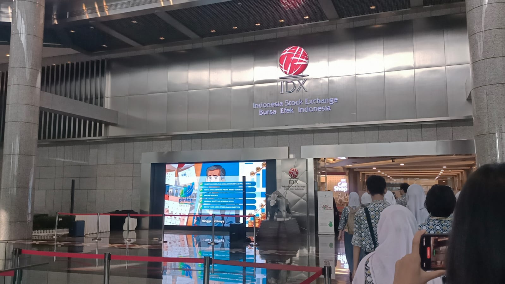
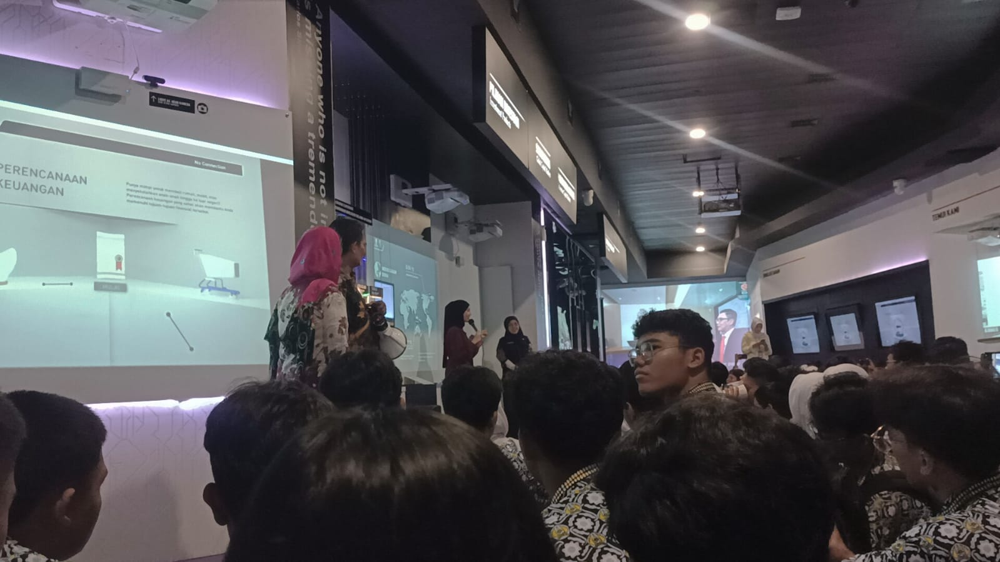
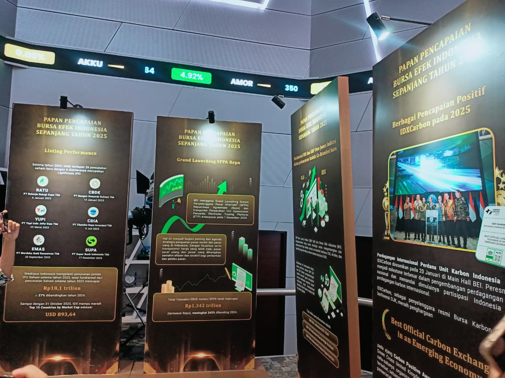
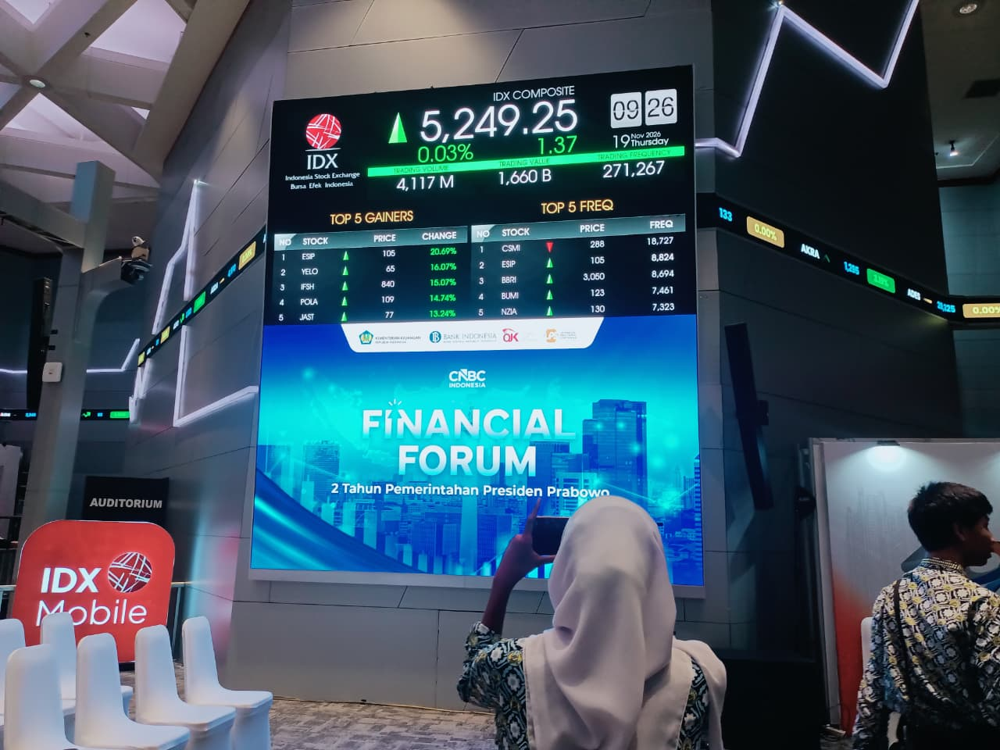

Dokumentasi Kegiatan BEI (10 Foto)
klik foto untuk memperbesar tampilan.

1. keberangkatan dari SMKN 2 Jakarta

2. lobi Gedung Bursa Efek Indonesia (SCBD)

3. Sesi pemaparan materi dan challange simulasi investasi oleh tim BEI

4. Grafik ilustrasi pasar modal

5. Kutipan terkenal Warren Buffett

6. Papan pencapaian Bursa Efek Indonesia

7. Main Hall Bursa Efek Indonesia

8. papan perdagangan saham di Main Hall BEI

9. Running Trade Board Bursa Efek Indonesia

10. Foto bersama seluruh siswa/siswi kelas XI SMKN 2 Jakarta di Main Hall BEI